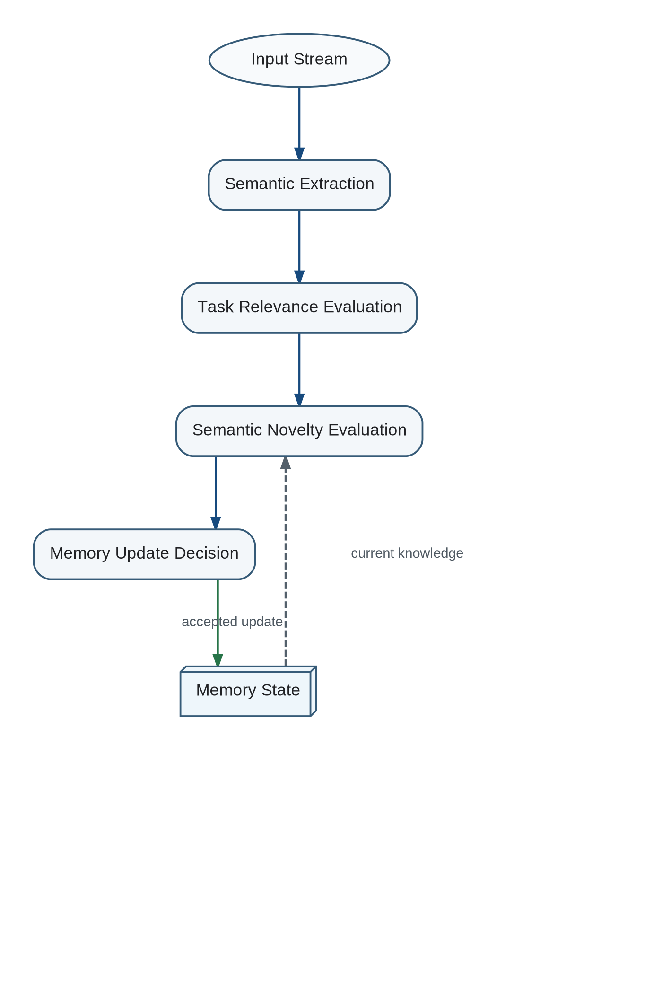

The processing sequence is: physical and perceptual preprocessing, semantic representation, Task Relevance evaluation, Semantic Novelty evaluation, and a Memory Update decision.
Hierarchical Cognitive Filtering

Each stage answers a different question: what is present, what matters now, what is new, and whether persistent state should change.